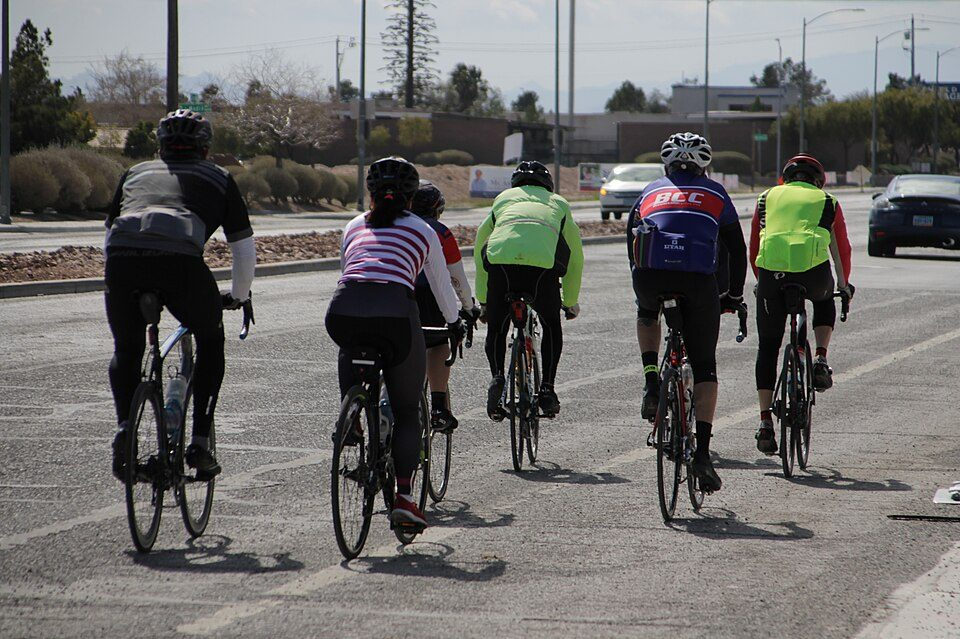
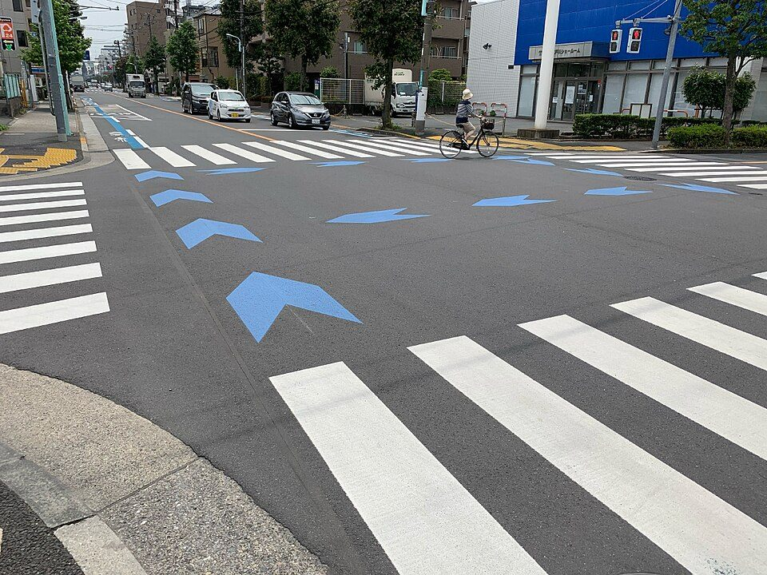
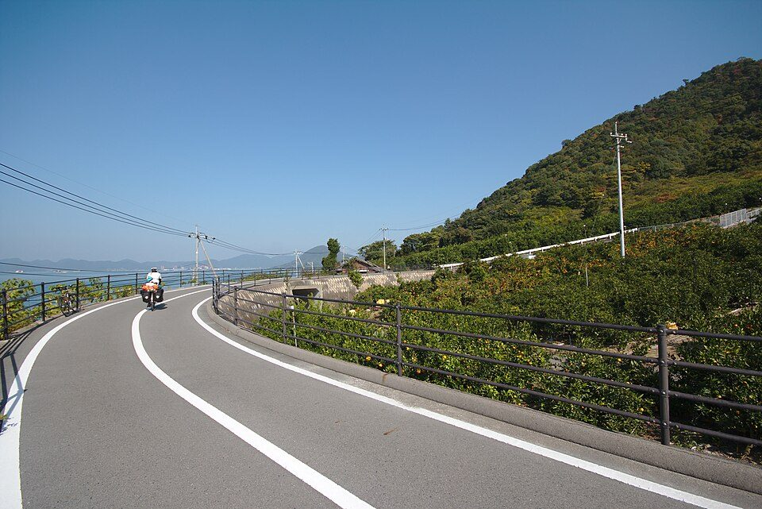

ロードバイクの始め方：選び方・費用・装備と、2026年4月からの自転車の交通ルール
要点まとめ
ロードバイクで通勤したい、週末に遠くまで走ってみたい、という大人に向けて、何を買い、何をそろえ、どんな決まりを守り、いくらかかるかをまとめました。自転車の決まりは、2026年4月1日に16歳以上を対象とする「青切符」（交通反則通告制度）が始まり[1]、車が自転車を追い抜くときの決まりも新しくなりました[3]。決まりと統計は警察庁・国土交通省などの公的な資料で、車体の特徴や価格はメーカー公式の説明で確かめています。新しい趣味の探し方全体は趣味の見つけ方、出かけた先での泊まり方の一つとしてキャンプの始め方もまとめています。

ロードバイクとは：クロスバイクとの違いとサイズ
ブリヂストンサイクルは、ロードバイクを、多段変速ギアやドロップハンドルを装備し、より速く軽快に走れるような部品の構成になっている自転車だと説明しています[9]。ドロップハンドルは、下側を持つと低い姿勢になって空気抵抗が少なくなり、上側を持つと呼吸が楽になる、としています[10]。
| 項目 | ロードバイク | クロスバイク |
|---|---|---|
| ハンドル | ドロップハンドル。握る位置で姿勢を変えられる[10] | 真一文字（まっすぐ）の形で、安定した姿勢で走れる[9] |
| メーカーが挙げる向く人 | 「もっと遠くへ行きたい」「走ること自体を楽しみたい」[9] | 「通勤通学にも使いたい」「まずはスポーツバイクに慣れたい」[9] |
| 価格の例（同じメーカー、税込） | アンカー RE6 CLARIS MODEL：149,000円[6] | アンカー RL1（機械式）：70,000円[11] |
値段は「フレームの素材」と「部品」で変わる
アルミは安くて丈夫、カーボンは軽いが高い（メーカーの説明）
ブリヂストンサイクルは、車体の価格は「素材」と「コンポーネント」で大きく変わると説明しています。フレームはカーボン、アルミ、クロモリ（鉄）などで作られ、アルミは安価で丈夫、カーボンは軽量でしなやかなぶん高価だとしています。コンポーネントは、ギアやブレーキなど駆動まわりの部品のことで、シマノのロード用では DURA-ACE から CLARIS まで、価格によって性能が大きく変わるとしています[9]。
サイズは身長の目安で選び、店で合わせる
メーカーは身長の目安を示し、店での相談を勧めている
同じ車種でもフレームの大きさが何種類かあり、メーカーは身長の目安を示しています。ジャイアントは、目安は参考値で適合を保証するものではないとして、サイズ選びは正規販売店で相談するよう案内しています[5]。ブリヂストンサイクルの目安は、股下の長さなどから計算したものです[6]。乗り始めのサドルの高さは、慣れるまでは、またがったときに「つま先が少しつくくらいの高さ」から始めるとよいと説明しています[10]。
| 車種 | サイズ | 身長の目安 |
|---|---|---|
| アンカー RE6 | 390mm | 145〜158cm[6] |
| 430mm | 154〜167cm[6] | |
| 470mm | 163〜176cm[6] | |
| 510mm | 173〜185cm[6] | |
| ジャイアント Contend 2 | XS | 157〜169cm[5] |
| S | 165〜175cm[5] | |
| M | 171〜181cm[5] | |
| ML | 177〜187cm[5] |
目安の幅は、となりのサイズと重なっています。重なる身長の人は、販売店で実際にまたがって確かめるのが確実です（筆者の見解）。
買う店と、安全基準のマーク
スポーツ車に詳しい店員の資格や、安全基準のマークがある
自転車協会は2007年に、スポーツ用自転車を扱う販売店向けの「SBAAマーク制度」を始めました。同協会の2026年のお知らせでは、販売店の人の資格「SBAA PLUS」の認定者1000名が在籍する店舗が、全国45都道府県にあるとしています（4月1日現在）[12]。完成車の安全性については、同協会が自主基準「自転車安全基準」を定め、合った自転車に BAA マークを貼る仕組みで、約90項目の検査をしていると説明しています[13]。警察庁も、TSマーク、JISマーク、BAAマーク、SGマークなど安全性を示すマークの付いた自転車を使うよう呼びかけています[2]。
くわしく
- 通販で部品が外れた状態で届き、自分で組み立てたクロスバイクの前輪が走行中に外れた事例も（2025年2月公表）[14]
いくらかかるか：車体の価格と最初の費用
見方: アンカーはメーカー希望小売価格です[6][11]。ジャイアントは Contend 2 の製品ページと、同じページの関連製品欄にある価格です[5]。アンカー RE6 の3つは同じ車種で、コンポーネントが CLARIS・CUES・105 と違い、いちばん安いものと高いものの差は10万円です。ここに挙げたのは2社の例で、ほかのメーカーの価格は今回確かめていません。
統計で見る自転車の値段
2025年に売れた自転車は、1台あたり50,585円（全車種）
自転車産業振興協会の推計では、2025年に国内で売れた自転車は約467万台、金額は2361億円（消費税込み）で、1台あたりの価格は50,585円でした（POS販売統計から推定）[15]。これは一般の自転車（軽快車）や電動アシスト自転車も含めた数字です[15]。協会は、円安や部材価格の高騰などで車体価格が上がっているとしています[15]。
ヘルメットの価格の例
スポーツ用は税込11,550円から165,000円まで（1社の例）
ヘルメットメーカーの OGKカブトの公式サイトでは、自転車用ヘルメット（スポーツ）の価格は、税込11,550円から165,000円まででした（2026年11月11日時点）[16]。警察庁は、SGマークなど安全性を示すマークの付いたヘルメットを使い、あごひもを確実に締めるよう呼びかけています[17]。
防犯登録の料金（東京都の例）
東京都の新規登録は660円（非課税）、有効期限は10年
防犯登録は、自転車を使う人が受けなければならないと法律で決められた手続きです（自転車法第12条第3項）[8]。東京都で登録を受け付ける東京都自転車商防犯協力会によると、手続きは自転車販売店やスーパー、ホームセンターなどの「自転車防犯登録所」で行います。有効期限は登録した日の翌年初から10年間で、10年を過ぎて使うときは新たに「新規登録」をし、登録料660円（非課税）がかかるとしています[18]。
自転車通勤の手当は、一定額まで非課税
片道2km以上10km未満なら、1か月4,200円まで非課税
会社から自転車通勤の通勤手当をもらう場合、片道の通勤距離に応じて、1か月あたりの非課税の限度額が決まっています（令和8年4月1日現在の法令等）[19]。
そろえる装備と、法律の決まり
| 装備 | 決まり | 根拠 |
|---|---|---|
| ヘルメット | すべての自転車利用者の努力義務（2023年4月1日から）[17]。かぶらなくても反則金の対象にはならない[2] | 道路交通法63条の11[20] |
| 前照灯（ライト） | 夜間（日没から日出まで）は点灯が義務[20]。東京都の例では、白色か淡黄色で前方10mの障害物が見える明るさ[21] | 道路交通法52条、都道府県の規則 |
| 反射器材（または尾灯） | 夜間は基準に合う反射器材が必要。尾灯をつけていれば不要[20]。後方100mから見え、反射光は橙色か赤色[22] | 道路交通法63条の9第2項、施行規則9条の4 |
| ブレーキ | 前輪と後輪の両方を制動し、時速10kmから3m以内で止まれる性能[22] | 道路交通法63条の9第1項、施行規則9条の3 |
| ベル（警音器） | 東京都の例では、ベルのない自転車を運転してはいけない[21]。鳴らしてよい場面は、法令で決まった場合に限られる[20] | 都道府県の規則、道路交通法54条 |
| 防犯登録 | 受けなければならない[8] | 自転車法12条3項 |
| 自転車保険 | 34都府県が条例で加入を義務にしている（令和6年4月1日現在）[7] | 都道府県の条例 |
ヘルメット：かぶっている人は全国で24.4%
頭を負傷した人の致死率は、非着用が着用の約1.4倍
警察庁によると、令和6年中の自転車乗用中の死者の約5割が頭部を負傷していました。令和2〜6年の合計で、頭部を負傷した人の致死率は、ヘルメット着用が1.9%、非着用が2.6%で、非着用は着用の約1.4倍でした[2]。それでも2026年6月の警察庁の調査（平日、51,425人）では、ヘルメットの着用率は全国で24.4%でした[23]。
調査場所は、駅周辺の駐輪場の近く（朝）と、商店街やショッピングセンターの周辺（午後）です[23]。
ライト：夜に消していると、致死率が上がる
夜の消灯・設備なしの致死率は、点灯時の約1.8倍
警察庁の資料では、令和2〜6年の夜間の自転車の事故で、前照灯を消していたり付いていなかったりしたときの致死率は、点灯していたときの約1.8倍でした[2]。夜間の無灯火は反則金5,000円の対象です[2]。
盗難：自転車盗は年に17万件
令和7年の自転車盗の認知件数は、17万2,654件
警察庁によると、令和7年の自転車盗は17万2,654件で、前年より0.8%減りました[24]。東京都自転車商防犯協力会は、防犯登録の目的を自転車の盗難予防と被害回復だとし、登録すると所有者がはっきりすると説明しています[18]。
自転車保険：34都府県で加入が義務
賠償を命じられた判決の例は、最高で9,521万円
国土交通省のまとめでは、令和6年4月1日現在、条例で自転車損害賠償責任保険等への加入を義務にしているのは34都府県、努力義務が10道県、条例がないのは島根・長崎・沖縄の3県でした[7]。日本損害保険協会は、自転車には自動車の自賠責保険のような被害者救済のための強制保険がないと説明しています[25]。
2026年4月からの青切符と反則金
- 2015年6月1日
自転車運転者講習が始まる
受講命令に従わないと5万円以下の罰金[27]
- 2023年4月1日
ヘルメットが全員の努力義務に
- 2024年11月1日
ながらスマホ・酒気帯び運転に罰則
道路交通法の改正[28]
- 2026年4月1日
16歳以上に青切符。追い抜きの決まりも
2026年4月〜 青切符の対象は16歳以上
反則金は、原則7日以内に銀行や郵便局で仮納付する
2026年4月1日から、自転車にも交通反則通告制度（いわゆる青切符）が適用されました。対象は16歳以上の運転者です[1]。取締りを受けたら、翌日から原則7日以内に、渡された「納付書」を銀行や郵便局の窓口に持って行き、反則金を仮納付します[1]。警察官が取締りの現場で反則金を集めることはありません[3]。
基本は「指導警告」、悪質・危険な違反は検挙
歩道を通っただけなら、原則は指導警告
警察庁は、自転車の違反を見つけた場合、基本的には現場で指導警告を行い、交通事故の原因となるような悪質・危険な違反のときに検挙するとしています[29]。例えば単に歩道を通っただけなら原則として指導警告の対象で、遮断踏切立入り、自転車制動装置不良（ブレーキの不良）、携帯電話使用等（保持）は、青切符の対象になる例として挙げています[3]。令和7年には、約110万件の指導警告票が交付され、約6万件の違反が検挙されました[27]。
| 違反の例 | 反則行為の名前 | 反則金 |
|---|---|---|
| スマホを手に持って通話・画面を注視 | 携帯電話使用等（保持） | 12,000円（自転車の反則金で最も高い）[2][30] |
| 遮断機が下りた踏切に入る | 遮断踏切立入り | 7,000円[30] |
| 信号を守らない | 信号無視 | 6,000円（点滅信号は5,000円）[30] |
| 車道の右側を走る（逆走） | 通行区分違反 | 6,000円[2] |
| 手放し運転など | 安全運転義務違反 | 6,000円[2] |
| 「止まれ」で止まらない | 指定場所一時不停止等 | 5,000円[2] |
| 夜間にライトをつけない | 無灯火 | 5,000円[2] |
| ブレーキがない・効かない | 自転車制動装置不良 | 5,000円[2] |
| 傘差し運転、周りの音が聞こえないイヤホン | 公安委員会遵守事項違反 | 5,000円[2] |
| 車に追い抜かれるとき左に寄らない | 被側方通過車義務違反 | 5,000円[2] |
| 横に並んで走る | 並進禁止違反 | 3,000円[2] |
| 二人乗り | 軽車両乗車積載制限違反 | 3,000円[2] |
| 歩道で徐行しない・歩行者を妨げる | 歩道徐行等義務違反 | 3,000円[2] |
飲酒運転は、青切符ではなく刑事手続
酒気帯びは3年以下の拘禁刑または50万円以下の罰金
警察庁は、飲酒運転やあおり運転などの重大な違反は、赤切符（刑事手続）の対象だとしています[3]。酒酔い運転は5年以下の拘禁刑又は100万円以下の罰金、酒気帯び運転（呼気1リットルあたり0.15mg以上など）は3年以下の拘禁刑又は50万円以下の罰金です[2]。
イヤホンは「周りの音が聞こえるか」
片耳や骨伝導型は、必要な音が聞こえる限り違反でない
傘を差しながらの運転や、周りの音が聞こえない状態でのイヤホンの使用は、全ての都道府県で公安委員会の規則により禁止されています[2]。警察庁のルールブックは、イヤホンを片耳だけに着けているときや、耳を完全にはふさがないオープンイヤー型・骨伝導型のイヤホンは、安全な運転に必要な音や声が聞こえる限り違反にはならないとしています[2]。
車道の走り方と、車が追い抜くときの決まり
令和7年の自転車関連の事故は67,470件でした[27]。自転車に乗っていて亡くなった人は306人で、交通事故の死者2,547人の12.0%にあたります[31]。死亡・重傷事故の相手の約75%は自動車で、自転車と自動車の事故では出会い頭の衝突が約55%と最も多くなっています[27]。自転車に乗っていての死亡・重傷事故の約4分の3では、自転車の側にも法令違反がありました[32]。
車道の左側端を通るのが原則
自転車は軽車両。車道の左側端に寄って通る
道路交通法では、自転車は軽車両で、道路の左側端に寄って通行しなければなりません[20]。歩道を通れるのは、標識などで認められているとき、13歳未満・70歳以上の人や車道の通行に支障がある人、やむを得ないときなどに限られます[27][20]。歩道では車道寄りを徐行し、歩行者の通行を妨げるときは一時停止します[20]。歩道を通れるのは、長さ190cm以内・幅60cm以内などの基準を満たす「普通自転車」だけです[33]。

2026年4月〜 車が自転車を追い抜くときの「側方通過」
間隔が足りなければ、車は間隔に応じた安全な速度で
2026年4月1日から、自動車が自転車を追い抜くとき、自転車との間に十分な間隔がなければ、その間隔に応じた安全な速度で進まなければならなくなりました（道路交通法18条3項）[3][4]。警察庁は目安として、少なくとも1メートル程度の間隔を空け、空けられないときは時速20〜30キロメートル程度で運転するよう示しています。ただし、これはあくまで目安で、道路や交通の状況によって異なるとしています[4]。
自転車の側も、このときはできる限り道路の左側端に寄って通行しなければならず（同18条4項）、違反は反則金5,000円の対象です[4][2]。車を運転する側の安全装置については、エアバッグの仕組みの記事にまとめています。
遠くへ行く：輪行とナショナルサイクルルート
電車に載せる：解体して専用の袋に入れれば無料
JR東海・JR九州では、袋に入れた自転車は無料の手回り品
自転車を袋に入れて電車で運ぶこと（いわゆる輪行）について、JR東海とJR九州のきっぷのルールでは、サイクリングやスポーツ大会などに使う自転車を解体して専用の袋に入れたもの（折りたたみ式は、折りたたんで専用の袋に入れたもの）を、無料で持ち込める手回り品としています[34][35]。持ち込める荷物は、タテ・ヨコ・高さの合計が250センチ（長さは2メートルまで）以内、重さ30キロ以内のものを2個までです[34][35]。
ナショナルサイクルルートは12ルート
2026年7月23日の第3次指定で、6ルートが加わった
国土交通省は、決められた要件を満たすサイクリングルートを「ナショナルサイクルルート」として指定しています。必須の要件の例には、延長がおおむね100km以上（島しょ部を除く）、矢羽根などで自転車の通る空間が整備されていること、サイクルステーションがおおむね20kmごと、サイクリスト向けの宿泊施設がおおむね60kmごとにあること、などがあります[37]。2019年に3ルート[38]、2021年に3ルート[39]、2026年7月23日に6ルートが指定されました[40]。
| ルート | 区間 | 延長 | 指定 |
|---|---|---|---|
| つくば霞ヶ浦りんりんロード | JR岩瀬駅〜JR土浦駅と霞ヶ浦湖岸一周（茨城県） | 176km | 第1次（2019年11月7日）[38] |
| ビワイチ | 琵琶湖岸一周（滋賀県） | 193km | 第1次[38] |
| しまなみ海道サイクリングロード | JR尾道駅（広島県）〜サンライズ糸山（愛媛県） | 70km | 第1次[38] |
| トカプチ400 | 帯広市を起終点とし、上士幌町から大樹町までを8の字で結ぶ | 403km | 第2次（2021年5月31日）[39] |
| 太平洋岸自転車道 | 銚子駅（千葉県）〜加太港（和歌山県） | 1,487km | 第2次[39] |
| 富山湾岸サイクリングコース | 氷見市〜朝日町（富山県） | 102km | 第2次[39] |
| ふくしま浜通りサイクルルート | 福島県いわき市〜福島県新地町 | 179km | 第3次（2026年7月23日）[40] |
| フジイチ | 静岡県富士宮市（道の駅朝霧高原）を起終点 | 163km | 第3次[40] |
| 雪国魚沼Golden Cycle Route “GCR” | 新潟県湯沢町〜新潟県魚沼市 | 193km | 第3次[40] |
| いしかわ里山里海サイクリングルート | 石川県加賀市〜石川県七尾市 | 517km | 第3次[40] |
| 鳥取うみなみロード | JR東浜駅〜JR境港駅 | 152km | 第3次[40] |
| あまいち | 熊本県宇城市〜熊本県天草市 | 152km | 第3次[40] |
区間と延長は、国土交通省のナショナルサイクルルートのページによります[37]。

国の第3次自転車活用推進計画
2026年5月29日に閣議決定。2030年度までの計画
国土交通省によると、令和12（2030）年度までを計画期間とする第3次自転車活用推進計画が、2026年5月29日に閣議決定されました[41]。
乗る前の点検と、体のこと
乗る前の点検は「ぶたはしゃべる」
ブレーキ・タイヤ・ハンドル・車体・ベルを確かめる
文京区は、自転車に乗る前の日常点検のポイントを「ぶたはしゃべる」（ブレーキ、タイヤ、ハンドル、車体、ベル）と案内しています[42]。警察庁も、ブレーキ、タイヤ、反射器材、車体、ベルなどを利用のたびに点検するよう呼びかけています[2]。ブリヂストンサイクルは、ロードバイクのタイヤは細く、段差の乗り上げなどはパンクの原因になり、雨の日はマンホールなどで滑りやすくなると説明しています[10]。
レバーで外せる車輪は、毎回固定を確かめる
調べた52台のうち31台は、正しく固定できていなかった
国民生活センターが実際の自転車52台を調べたところ、31台はクイックレリーズハブを正しく固定できていませんでした。利用者への調査では、3割が乗る前に前輪の固定を確かめたことがありませんでした[36]。走行中に前輪が外れると、乗っている人は進む方向に投げ出され、重い事故になりやすいとしています[36]。
くわしく
- 2012年度以降、前輪が外れたという危害・危険情報が22件寄せられている（PIO-NET）[36]
運動の強さ：自転車通勤は6.8メッツ
週5日、片道30分の自転車通勤で週34メッツ・時（計算）
国立健康・栄養研究所の「身体活動のメッツ表」では、運動の強さの目安（メッツ）は、自転車の通勤（自分で選んだペース）が6.8、時速16.1km未満のレジャー・通勤が4.0です[43]。厚生労働省のガイドは、大人に、3メッツ以上の身体活動を週23メッツ・時以上（1日60分以上、1日約8,000歩以上に相当）行うことと、息が弾み汗をかく程度の運動を週60分以上行うことを勧めています[44]。例えば片道30分の自転車通勤（6.8メッツ）を週5日すると、6.8×1時間×5日で34メッツ・時になり、週23メッツ・時を上回ります（筆者の計算）。座りすぎへの対策はデスクワークの疲れを減らす方法にまとめています。
暑い日は「暑さ指数」を見てから
暑さ指数31以上は、運動は原則中止
環境省の熱中症予防情報サイトは、日本スポーツ協会の「熱中症予防運動指針」を紹介しています。暑さ指数（WBGT）が31以上のときは運動は原則中止、28以上31未満は厳重警戒で、激しい運動は中止としています[45]。
今回確認できなかった点
- ここに挙げた2社以外のメーカーの、入門向け完成車の公式の税込価格
- 試乗についての、メーカーや業界団体の説明
- ロードバイクだけの販売台数や平均価格の統計
- JR東日本の、袋に入れた自転車の持ち込みの決まり（案内のページを開けなかった）
- 袋に入れた自転車が、新幹線の「特大荷物」の座席予約の対象になるかどうか
- 自転車保険の条例の、令和7年以降の制定状況
- 青切符の対象になる反則行為の正確な数
出典（45件）
閲覧日はいずれも2026年11月11日〜12日
- 自転車ポータルサイト「自転車の新しい制度」（警察庁）
- 自転車を安全・安心に利用するために－自転車への交通反則通告制度（青切符）の導入－【自転車ルールブック】（令和7年9月、PDF）（警察庁交通局）
- 自転車ポータルサイト「よくある質問」（警察庁）
- 自動車等が自転車等の右側を通過する場合の通行方法（PDF）（警察庁）
- Contend 2（製品ページ。関連製品欄の Contend 1・Contend 3 を含む）（ジャイアント）
- アンカー RE6（ブリヂストンサイクル）
- 自転車損害賠償責任保険等への加入促進（条例の制定状況、令和6年4月1日現在、PDF）（国土交通省 自転車活用推進本部）
- 自転車の安全利用の促進及び自転車等の駐車対策の総合的推進に関する法律（e-Gov法令検索）
- Choose バイクを選ぼう（はじめよう！ロードバイク！TRY TO RIDE！）（ブリヂストンサイクル）
- Get on 乗り方を知ろう（はじめよう！スポーツバイク！TRY TO RIDE！）（ブリヂストンサイクル）
- アンカー RL1（ブリヂストンサイクル）
- お知らせ（一般社団法人 自転車協会）
- BAA「自転車安全基準とは？」（一般社団法人 自転車協会）
- 走行中に前車輪が外れたクイックリリースハブ仕様の自転車（相談解決のためのテストからNo.194）（国民生活センター）
- 2025年POS販売統計年間総括（PDF）（一般財団法人 自転車産業振興協会）
- 自転車用ヘルメット＆ギア（製品情報）（OGKカブト）
- 頭部の保護が重要です～自転車用ヘルメットと頭部保護帽～（警察庁）
- 防犯登録とは（一般社団法人 東京都自転車商防犯協力会）
- タックスアンサー No.2585 マイカー・自転車通勤者の通勤手当（国税庁）
- 道路交通法（e-Gov法令検索）
- 東京都道路交通規則（東京都例規集）（東京都）
- 道路交通法施行規則（e-Gov法令検索）
- 自転車乗車用ヘルメット着用率調査結果（令和8年6月調査、PDF）（警察庁）
- 令和７年の犯罪情勢（PDF）（警察庁長官官房）
- 自転車事故と保険（一般社団法人 日本損害保険協会）
- ＴＳマークとは（公益財団法人 日本交通管理技術協会）
- 自転車は車のなかま～自転車はルールを守って安全運転～（警察庁）
- 自転車に関する道路交通法の改正について（警視庁）
- 自転車ポータルサイト「取締りについて」（警察庁）
- 自転車をはじめとする軽車両の反則行為と反則金の額（PDF）（警察庁）
- 令和７年における交通事故の発生状況について（PDF）（警察庁交通局）
- 自転車ポータルサイト「事故・違反の発生状況」（警察庁）
- 自転車ポータルサイト「自転車の交通ルール」（警察庁）
- きっぷのルール「手回り品」（東海旅客鉄道（JR東海））
- きっぷのルール「手回り品」（九州旅客鉄道（JR九州））
- 自転車の前車輪の脱落に注意－スポーツ車などのクイックレリーズハブは乗車前の使用者による固定確認が必要です－（国民生活センター）
- ナショナルサイクルルート（GOOD CYCLE JAPAN）（国土交通省）
- 報道発表「第１次ナショナルサイクルルートを指定しました！」（令和元年11月7日）（国土交通省）
- 報道発表「第２次ナショナルサイクルルートを指定しました」（令和3年5月31日）（国土交通省）
- 【令和8年7月23日】「新・自転車アンバサダー任命式」、「第３次ナショナルサイクルルート指定式」（国土交通省）
- 報道発表「第３次「自転車活用推進計画」を本日閣議決定」（令和8年5月29日）（国土交通省）
- 自転車の点検（文京区）
- 改訂版『身体活動のメッツ（METs）表』（2012年4月11日改訂、PDF）（国立健康・栄養研究所）
- 健康づくりのための身体活動・運動ガイド2023（PDF）（厚生労働省）
- 熱中症予防情報サイト「暑さ指数（WBGT）について」（環境省）
写真・画像の出典（3件）
- ヘルメットをかぶって走るロードバイクの一団（アメリカ・ラスベガス）
写真: Noah Wulf／Wikimedia Commons（CC BY-SA 3.0） - 交差点の普通自転車専用通行帯と、自転車を誘導する矢羽根マーク
写真: しんぎんぐきゃっと／Wikimedia Commons（CC BY-SA 4.0） - しまなみ海道のサイクリングロード（広島県・生口島）
写真: Fabimaru／Wikimedia Commons（CC BY-SA 4.0）